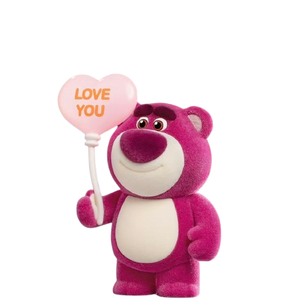

Hi Sayangg
Aku tau akhir-akhir ini aku banyak bikin hati kecil kamu sedih. Aku cuma minta waktu sebentar buat baca ini.
Aku tau akhir-akhir ini aku banyak bikin hati kecil kamu sedih. Aku cuma minta waktu sebentar buat baca ini.


Aku sadar mungkin aku terlalu sering bikin kamu kecewa. Aku ga akan membela diri. Aku cuma mau ngaku kalau aku memang salah.

Aku tahu kata maaf ga langsung menghilangkan rasa kecewa. Tapi aku benar-benar ingin berubah.
Sayangg...
maafin aku yaa karena kemarin selama 2 hari aku nggak ngabarin kamu, maaf udah bikin kamu nunggu, khawatir, atau mungkin ngerasa kalau aku nggak peduli sama kamu.
jujur, aku nggak pernah ada niat buat bikin kamu ngerasa begitu, karena kamu itu orang yang berarti banget buat aku.
aku sadar seharusnya aku bisa ngeluangin sedikit waktu buat ngabarin kamu, sesibuk apa pun aku.
maaf yaa cintakuuu, aku nggak mau hal kecil kayak gini bikin kamu sedih atau ngerasa sendirian dalam hubungan kita. aku bakal berusaha lebih baik lagi, karena aku nggak cuma mau bilang kalau aku sayang kamu, tapi juga buktiin lewat sikap aku.
jangan lama-lama marah sama aku yaa sayang, aku kangen ngobrol sama kamu, kangen bercanda sama kamu, dan kangen semuanya tentang kita.
i love you so much, maafin aku yaa, cintakuuu 🥺🤍🫂

Terima kasih sudah membaca semuanya. Semoga setelah ini kita bisa sama-sama memperbaiki semuanya.❤️